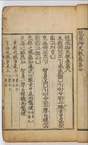

용비어천가 (龍飛御天歌)
"해동(海東)의 여섯 용이 날으셔, 일마다 하늘이 주신 복이시니"

- 정의: 조선 왕조의 건국과 정통성을 찬양하고 후대 왕들에게 경계의 메시지를 전하기 위해 편찬된 최초의 훈민정음 한글 시가 문학(악장).
- 지정 및 형태: 국보 지정 유물. 총 125장, 10권 5책의 목판본으로 전승됨 (초간본은 활자본으로 추정되나 전하지 않음)
- 편찬 시기 및 참여자: 1445년(세종 27): 정인지 등이 125장의 한글 시가와 한시 번역본을 지어 올림 (책 이름은 세종이 직접 명명), 1447년(세종 29): 최항 등이 역사적 사실을 기록한 한문 주해를 완성하여 최종 간행
1. 편찬 배경과 정치적 목적
건국의 정당성 확보 (역성혁명과 권력 찬탈의 극복)
조선 건국 과정에서 발생한 강제적 권력 찬탈과 이성계 선대의 행적을 '천명(天命)'과 결부하여 신화화함으로써 새 왕조의 권위를 높이고 민심을 안정시키고자 했습니다.왕위 계승의 정통성 공표
두 차례의 '왕자의 난'과 태종이 형(정종)의 세자로서 왕위를 이어받았던 역사적 콤플렉스를 극복하기 위함이었습니다. 이를 위해 정종을 의도적으로 배제하고 [목조 -> 익조 -> 도조 -> 환조(선대 4조)] -> [태조] -> [태종] -> [세종]으로 이어지는 왕위 계승 라인을 공식화·신화화했습니다. 지식인층의 사대주의와 성리학적 명분론에 근거한 반대 세력의 핵심 논거 6가지2. 구조 및 장별 핵심 내용
전체 125장으로 구성되어 있으며 각 장은 대개 2행(각 행 4구)의 서사시 형태입니다. 내용은 크게 세 부분으로 나뉩니다.- 1장: 육룡이 날아 하시는 일마다 천복을 받으니 중국 고사와 부합함.
- 2장: 유서 깊은 왕조의 뿌리를 나무(뿌리 깊은 나무...)와 물(샘이 깊은 물...)에 비유한 최고의 문학적 절창.
- 3~8장: 선대 4조의 행적을 천명과 연결
- 9~14장: 위화도회군부터 한양 천도까지의 과정 (태조가 고려를 지키려다 어쩔 수 없이 천명을 받았음을 강조).
- 15~26장: 전주 이씨 가문의 덕망을 중국 및 고려 고사와 비교.
- 27~109장: 태조 이성계의 압도적인 무공(왜구 격퇴), 신들린 활쏘기 재주(말 위에서 범 잡기, 적장의 눈·입 맞추기 등), 인격에 대한 신화적 찬양.
- 앞의 신화적 서술 대신, 후대 왕들이 유교적 학문과 도덕을 갖추어 **인정(仁政)**을 펼쳐야만 국가의 안녕을 지킬 수 있음을 역설함.
구분: 서론 (1 ~ 2장)
문학적 주제와 건국 목적 명시.
구분: 본론 (3 ~ 109장)
조선 창업의 위대함 서술
구분: 결론 (110 ~ 125장)
후대 국왕들에 대한 경계(戒王訓)
3. 국어학적 및 사료적 가치
- 최초의 훈민정음 문헌: 훈민정음 창제 직후 그 실용성을 시험하고 대중적으로 확산하기 위해 기획된 최초의 한글 문헌입니다. (※ 『동국정운』 편찬 이전이라 한자에 별도의 동국정운식 음을 달지 않은 특징이 있음).
- 고어 및 고유 지명의 보고: 한글 가사와 한문 주해 속에 나타난 고유어 지명 연구에 결정적 사료입니다.
4. 조선 후기의 역사적 재조명 (국왕의 권위 회복 카드)
임진왜란과 병자호란을 거치며 왕실의 권위가 실추되자, 조선 조정은 조종(祖宗)의 위엄을 다시 세우기 위해 『용비어천가』를 적극적으로 재조명하고 중간(重刊)했습니다.